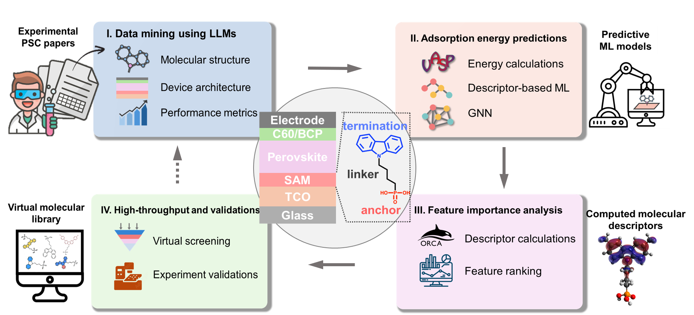
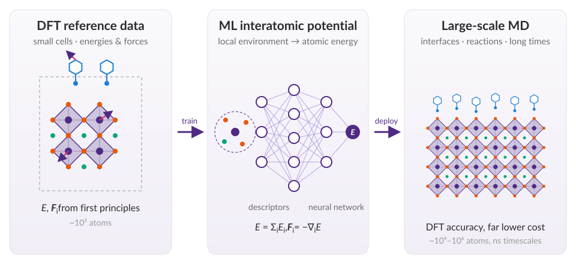

Overview
I am a computational scientist working at the intersection of first-principles calculations, atomistic simulation, kinetic modeling, and machine learning. My work spans phase transitions, chemistry under extreme conditions, 2D materials, and materials design, from ice nucleation, nanoconfined water, and carbon reactions in supercritical fluids to phonons in twisted bilayer graphene and materials discovery for perovskite solar cells. My current focus is machine learning accelerated discovery of materials for stable, high-performance perovskite solar cells.

AI-accelerated materials discovery
Designing and identifying molecules and materials for contact layers in perovskite solar cells by integrating data mining, DFT calculations, and machine learning, and automating the design pipeline with agentic AI.

Machine-learning interatomic potentials
Developing MLIPs for (1) perovskite/molecule contact interfaces, to probe atomistic interfacial behavior through molecular dynamics at DFT-level accuracy and far lower cost, and (2) hydrocarbon systems, to understand the reaction kinetics of aqueous carbon under deep-Earth conditions.

Kinetic modeling of phase transitions & chemical reactions
Constructing Markov state models to resolve the kinetics of phase transformations, such as ice nucleation and perovskite crystallization, and of chemical reactions in hydrocarbon systems.
Expertise
- Classical & ab initio MD
- DFT calculations
- Markov state modeling
- Machine-learning force fields
- Machine learning
- Materials discovery
- Data mining
- AI for materials
- Agentic AI
Software & codes
- LAMMPS
- Python
- PyTorch
- Quantum ESPRESSO
- Qbox
- CP2K
- ORCA
- VASP
- MSMBuilder
- DeepMD-kit
- Fortran
- C/C++